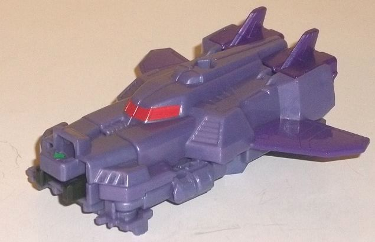
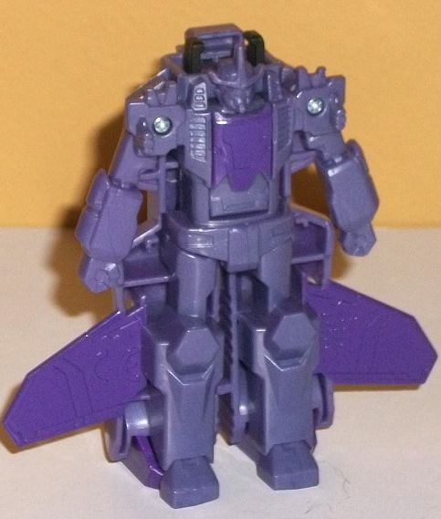
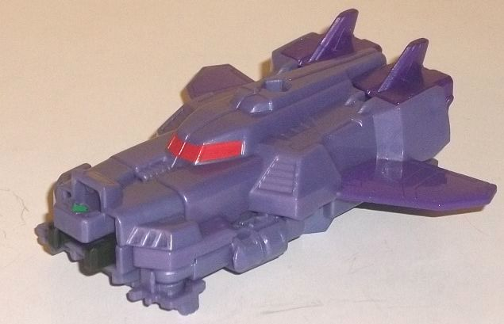
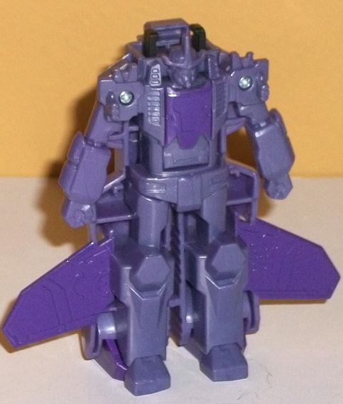
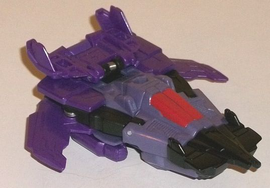
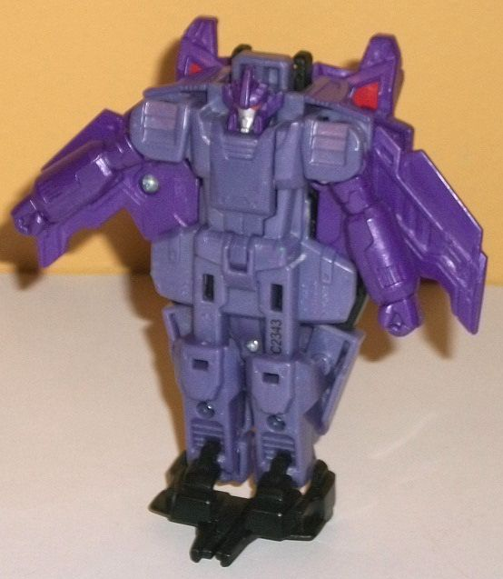
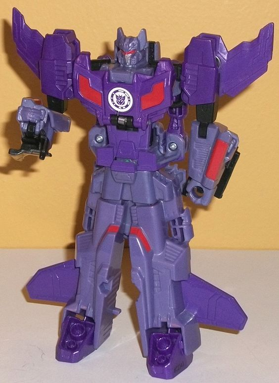

 
Difficulty of Transformation : Very Easy
Color Scheme : Moderately light pale milky purple, dark glossy purple, and some dark milky purple, light red, black, and forest green
Individual Rating : 3.8
Allegiances
: Decepticon
Size:
Crash Combiner 2-pack
Overall Rating
: 5.2
(NOTE: Because this set is a repaint, this
is not a full-blown review. This mainly covers any changes made to the
molds and the color schemes, and merely compares them to the original RID2015
Skyhammer Crash Combiner. For a review on the mold itself, read the review
of the original RID2015 Skyhammer set
here
.)
 Shockdrive
Shockdrive


Difficulty of Transformation
: Very
Easy
Color Scheme
: Moderately light pale
milky purple, dark glossy purple, and some dark milky purple, light red,
black, and forest green
Individual Rating
: 3.8
Shockdrive is a more
Decepticon-y redeco of Skysledge. Just HOW Decepticon-y of a redeco? Dude's
almost ALLLL purple. The vast majority of his plastic is a somewhat light,
somewhat pale milky shade of purple (though not VERY light or VERY pale--
just a bit of both). The primary contrast against this is a darker shade
of purple, used on plastic on his boosters and in glossy paint on his robot
chest and wings. Although both of these colors contrast and complement
each other, they don't contrast against each other ENOUGH, methinks. The
main shade of purple needed to be a bit lighter, or there needed to be
another major color added in here. Shockdrive DOES have a few other colors,
but they're minimal; his eyes and cockpit windows are a light red, the
combiner clip is black, and he's got that forest green paint app on the
arrow that shows you where to "crash combine" the toy. The red window in
vehicle mode looks pretty awesome, but otherwise these other colors are
used in such minute amounts they're barely worth mentioning. Shockdrive
really needs some more paint, particularly in robot mode.
Surprisingly, Shockdrive
has a new individual headsculpt, even though he's a non-show character
just like Skysledge. Shockdrive's head has "normal" red eyes, and a rather
large chin guard around his mouth, with a long three-pronged headcrest
on his otherwise round head; it's a pretty nice design, and definitely
gives him a bit more of a Decepticon-y feel even beyond the colors.
 Warnado
Warnado


Difficulty of Transformation
: Very
Easy
Color Scheme
: Moderately light pale
milky purple, dark glossy purple, and some black, light red, and forest
green
Individual Rating
: 4.5
Warnado (LOVE that name)
has the same basic color scheme as Shockdrive, in terms of being mostly
a fairly pale light milky purple and a dark glossy purple. However, he's
a bit heavier on the dark purple, and with the additon of more black in
vehicle mode, it really helps make his color scheme look more varied. The
usage of light red on the cockpit again helps break up the colors a bit
more. I still wish there was a bit of paint on the wings, but other than
that the color breakup in the vehicle mode is pretty good. (Oh, and yes
there's the forest green paint on the combiner port on the back end of
this mode.) Unfortunately, in robot mode most of these paint apps are gone,
with only the silver face and red eyes painted-- all of the rest of him
are those two shades of purple, with the only black being his feet. This
makes Warnado in robot mode have the same issues as Shockdrive, where the
two main shades are too similar and there's not enough paint to break up
much of it-- basically all of his body and legs are light purple, with
the wings, head, and arms dark purple. Even just a few paint apps on the
body really would've worked wonders. Sigh.
Unlike Shockdrive, Warnado
has no new mold changes compared to Stormhammer.
 Shocknado
(Combined Form)
Shocknado
(Combined Form)

Difficulty of Transformation
: Easy
Individual Rating
: 7.2
Of course, with Warnado
and Shockdrive having such similar color schemes, Shocknado (also love
that name) also has pretty much the same color scheme. The purple is broken
up a BIT more, though, with light purple prevalent on the legs, arms, and
head, while the dark purple is on the main body, shoulders, and feet. This
makes them complement and contrast against each other
slightly
more
since the shade is switched up more often. The red really helps make this
mode, though, as the paint from the two components' cockpits is now on
both knees and both lower arms, and there's some added red on the chest
as well. The head has a red visor too, and there's some silver on the faceplate.
There is some black, but it's mostly only used on small parts, like portions
of the upper legs and between the shoulders and head. (Well, and on the
nosecone pieces behind the lower arms-- but we aren't "supposed" to see
those.) Overall I definitely like the scheme the most in this mode, where
things are switched up a bit more.
Even though at first
glance it may seem like Shocknado has a new head, they just painted over
the eyes with a visor. It's the same headsculpt as with Skyhammer.
Shocknado takes some
of the better Crash Combiner molds and gives them a very Decepticon-y color
scheme, even though I wish the purples looked more different or were broken
up more, particularly when it comes to Shockdrive. The red really helps
break up the colors in combined mode, however, and overall, despite some
of the "sameness" of the color scheme, this is my favorite Crash Combiner
set due to a combination of the overall scheme and the (relative) strength
of the molds.
Review by Beastbot